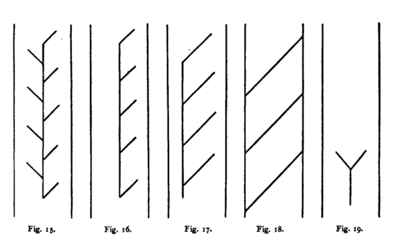
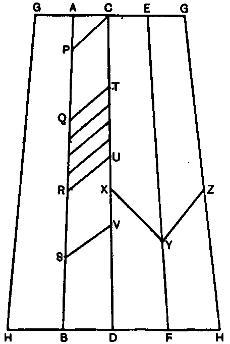

Harvesting Operations. Part 3
Description
This section is from the book "Rubber And Rubber Planting", by R. H. Lock. Also available from Amazon: Rubber And Rubber Planting.
Harvesting Operations. Part 3
Excision Methods Of Tapping
At the present time the method which is almost universally adopted on estates is paring on some system or other. The results are generally so satisfactory that paring is not likely to be given up in favour of any method of pricking, until very clear proof of the superiority of the latter is forthcoming.
The precise system of paring will partly depend upon the period which is to be allowed for bark renewal. At the present time it is generally recommended that the renewed bark should not be touched until a period of four years has elapsed from the beginning of tapping. There is some reason for believing that even this interval, which is longer than that formerly adopted on many estates, may be profitably increased. It is probable also that a longer period is required for each successive renewal.
As regards the size of tree upon which paring may safely be begun, it is generally considered that trees less than five years old from planting should not be tapped at any point where they are less than 18 inches in girth. The reason for this restriction is that where the circumference is smaller, the bark is so thin that it is almost impossible to pare without causing injury to the tree. Some authorities would increase the minimum size allowed to a girth of 20 inches or more.
If it is decided to allow four years for the renewal of the bark, the simplest system which can be adopted is to divide the circumference of the tree into four equal parts, and to tap these successively by the half-herringbone method. Each quarter section of the tree will then represent a year's tapping. The quarter section opposite the first should be tapped second, and then the other two sections successively, in order to preserve the symmetry of the tree as far as possible.
Systems Of Paring
The system of tapping adopted in the experiments described in Chapter iv was one of superimposed V's. The cuts were made at an angle of 45 degrees with the horizon, and the vertical distance between successive cuts was one foot. In describing other systems we may assume for the present a similar angle of cut, and a similar distance between successive cuts where there are more than one. The half-herring-bone system (Fig. 16) referred to in the last paragraph consists of a vertical conducting channel into which a single series of slanting cuts leads on one side only. Such a system may be derived from the superimposed V system by obliterating one limb of each V. Reasons have already been given for confining such a system to one quarter of the circumference. A similar system, extending over half the circumference of the tree, has however been widely used on estates, and is known as the half spiral system (Fig. 17). The full spiral system was once popular but is now almost obsolete, as it proved too drastic In this system one or more similar cuts extended right round the tree, or even girdled it more than once. There was no vertical channel, but each spiral cut drained into a separate collecting cup. In the full herring-bone system (Fig. 15) there is a conducting channel with slanting cuts on either side. The lateral cuts enter the central channel alternately instead of meeting as in the V system. The herring-bone method is generally preferred to the V system because in the latter the bark at the tips of the V's is said to be specially liable to injury. The full herring-bone system is often used on large trees, on which the lateral cuts would have to be of considerable length if the half-herring-bone system were employed. To mention only one other system on young trees in Malaya a single basal V (Fig. 19) is often tapped. By this method trees can be tapped close to the ground, although the bark at a higher level is not yet ready for tapping. The basal system is also being used on older trees on some estates, and it is said that the yield is almost as good as when two or three cuts are employed, whilst there is of course a great saving of bark.
Marking The Rubber Tree
When the age for beginning tapping has been reached, all the trees on a particular field are generally numbered consecutively. The trees are measured, and those which exceed a certain girth are marked out for tapping. It may be useful to describe a method of marking in some detail, in order that the system adopted may be clearly understood. The method of tapping to be described is the half-herring-bone on a quarter of the tree.
We will suppose a tree to be 20 inches in girth at 4 feet 6 inches from the ground. At this level a horizontal line is stencilled round the tree. From two points 5 inches apart on this line two vertical lines AB, CD are ruled down to the foot of the tree by the help of a straight edge. The tree may be perhaps 24 inches in girth a foot from the ground. If so the lines will be 6 inches apart at the point S. These lines should be so arranged that the equidistant points B, D, F, and H fall between the main lateral roots of the tree, which generally project above the level of the ground; otherwise there may be a difficulty in getting the collecting cups to stand upright when tapping is in progress.
Next a mark is made at P, 5 inches below A, so that AP is equal to AC A line drawn from P to C will then make an angle of 45 degrees with the horizontal. Marks Qt R, S, T, U, and V are made at intervals of a foot below P and C respectively, and lines are drawn joining up PC, QT, RU, and SV. These lines represent the positions of the original tapping cuts. The lower lines will make angles of rather less than 45 degrees with the horizon, but the slope will not be so much less as to make any serious difference in the result of tapping.
Fig. 20.
This method of marking will be found more accurate than that of measuring up from the ground, since the ground level on different sides of the tree is liable to vary considerably. The lines are best marked boldly with a tapping knife, in order to leave a permanent trace on the surface of the trunk.
From P nearly to 2? a broad shallow groove is cut with the tapping knife in order to form the conducting channel for the latex. The line CD should also be marked out with a clear cut, in order that the tapper may keep within the limits of the area allotted to him. It will further conduce to accurate work if additional guide lines are stencilled between the original tapping cuts, and parallel to these, at intervals of about 3 inches, as shown within the area QTUR.
In the above example the original tapping cuts have been placed 12 inches apart, in order to allow of a year's tapping on alternate days at the rate of 15 cuts to the inch 180 cuts in all. It is reported that in many parts of the Malay Peninsula the average width of the daily shaving removed is considerably less than one-fifteenth of an inch. When this is the case the original cuts may be placed somewhat closer together. On the other hand, if daily tapping be adopted it may be necessary to place the original cuts further apart
In the case of smaller trees those which are less than 20 inches in circumference at a foot from the ground tapping may be begun on a single basal V, as shown at XYZ in Fig. 20. After this V has been tapped for a year, the tree will probably be large enough to allow of placing two or more half-herringbone traces on the opposite side of the tree. In this case the areas ACBD and AGHB would next be tapped in succession, followed by a further half-herring-bone on the area CXVE above one-half of the original V.
Continue to: